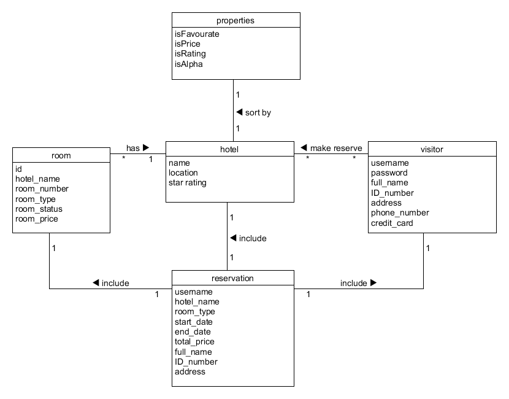
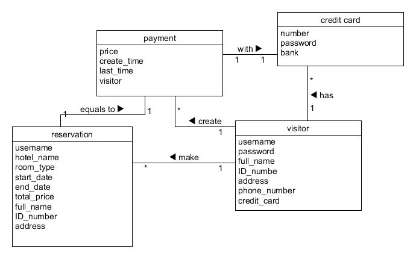
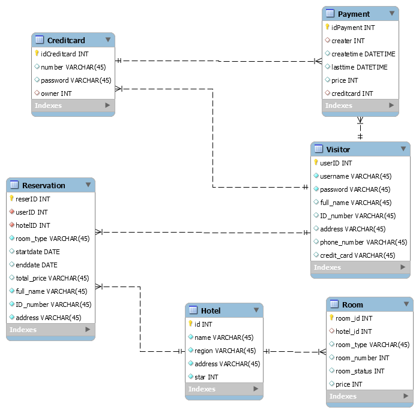
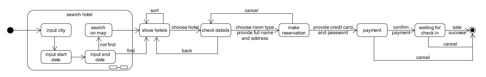

使用mysql进行了数据建模，数据建模的过程发现，其实很多属性都是由其他表中的信息计算得到的

-- MySQL Script generated by MySQL Workbench
-- Wed May 1 18:00:34 2019
-- Model: New Model Version: 1.0
-- MySQL Workbench Forward Engineering
SET @OLD_UNIQUE_CHECKS=@@UNIQUE_CHECKS, UNIQUE_CHECKS=0;
SET @OLD_FOREIGN_KEY_CHECKS=@@FOREIGN_KEY_CHECKS, FOREIGN_KEY_CHECKS=0;
SET @OLD_SQL_MODE=@@SQL_MODE, SQL_MODE='ONLY_FULL_GROUP_BY,STRICT_TRANS_TABLES,NO_ZERO_IN_DATE,NO_ZERO_DATE,ERROR_FOR_DIVISION_BY_ZERO,NO_ENGINE_SUBSTITUTION';
-- -----------------------------------------------------
-- Schema mydb
-- -----------------------------------------------------
-- -----------------------------------------------------
-- Schema mydb
-- -----------------------------------------------------
CREATE SCHEMA IF NOT EXISTS `mydb` DEFAULT CHARACTER SET utf8 ;
USE `mydb` ;
-- -----------------------------------------------------
-- Table `mydb`.`Hotel`
-- -----------------------------------------------------
CREATE TABLE IF NOT EXISTS `mydb`.`Hotel` (
`id` INT NOT NULL AUTO_INCREMENT,
`name` VARCHAR(45) NOT NULL,
`region` VARCHAR(45) NOT NULL,
`address` VARCHAR(45) NOT NULL,
`star` INT NOT NULL,
PRIMARY KEY (`id`))
ENGINE = InnoDB;
-- -----------------------------------------------------
-- Table `mydb`.`Room`
-- -----------------------------------------------------
CREATE TABLE IF NOT EXISTS `mydb`.`Room` (
`room_id` INT UNSIGNED NOT NULL DEFAULT 1,
`hotel_id` INT NULL,
`room_type` VARCHAR(45) NULL,
`room_number` INT NULL,
`room_status` INT NULL,
`price` INT NULL,
PRIMARY KEY (`room_id`),
INDEX `rtoh_idx` (`hotel_id` ASC) VISIBLE,
CONSTRAINT `rtoh`
FOREIGN KEY (`hotel_id`)
REFERENCES `mydb`.`Hotel` (`id`)
ON DELETE CASCADE
ON UPDATE CASCADE)
ENGINE = InnoDB;
-- -----------------------------------------------------
-- Table `mydb`.`Visitor`
-- -----------------------------------------------------
CREATE TABLE IF NOT EXISTS `mydb`.`Visitor` (
`userID` INT NOT NULL AUTO_INCREMENT,
`username` VARCHAR(45) NOT NULL,
`password` VARCHAR(45) NOT NULL,
`full_name` VARCHAR(45) NULL,
`ID_number` VARCHAR(45) NULL,
`address` VARCHAR(45) NULL,
`phone_number` VARCHAR(45) NULL,
`credit_card` VARCHAR(45) NULL,
PRIMARY KEY (`userID`),
UNIQUE INDEX `username_UNIQUE` (`username` ASC) VISIBLE)
ENGINE = InnoDB;
-- -----------------------------------------------------
-- Table `mydb`.`Reservation`
-- -----------------------------------------------------
CREATE TABLE IF NOT EXISTS `mydb`.`Reservation` (
`reserID` INT NOT NULL AUTO_INCREMENT,
`userID` INT NOT NULL,
`hotelID` INT NOT NULL,
`room_type` VARCHAR(45) NOT NULL,
`startdate` DATE NULL,
`enddate` DATE NULL,
`total_price` VARCHAR(45) NULL,
`full_name` VARCHAR(45) NOT NULL,
`ID_number` VARCHAR(45) NOT NULL,
`address` VARCHAR(45) NOT NULL,
PRIMARY KEY (`reserID`),
INDEX `retov_idx` (`userID` ASC) VISIBLE,
INDEX `retoh_idx` (`hotelID` ASC) VISIBLE,
CONSTRAINT `retov`
FOREIGN KEY (`userID`)
REFERENCES `mydb`.`Visitor` (`userID`)
ON DELETE NO ACTION
ON UPDATE NO ACTION,
CONSTRAINT `retoh`
FOREIGN KEY (`hotelID`)
REFERENCES `mydb`.`Hotel` (`id`)
ON DELETE NO ACTION
ON UPDATE NO ACTION)
ENGINE = InnoDB;
-- -----------------------------------------------------
-- Table `mydb`.`Creditcard`
-- -----------------------------------------------------
CREATE TABLE IF NOT EXISTS `mydb`.`Creditcard` (
`idCreditcard` INT NOT NULL AUTO_INCREMENT,
`number` VARCHAR(45) NULL,
`password` VARCHAR(45) NULL,
`owner` INT NULL,
PRIMARY KEY (`idCreditcard`),
INDEX `ctov_idx` (`owner` ASC) VISIBLE,
CONSTRAINT `ctov`
FOREIGN KEY (`owner`)
REFERENCES `mydb`.`Visitor` (`userID`)
ON DELETE NO ACTION
ON UPDATE NO ACTION)
ENGINE = InnoDB;
-- -----------------------------------------------------
-- Table `mydb`.`Payment`
-- -----------------------------------------------------
CREATE TABLE IF NOT EXISTS `mydb`.`Payment` (
`idPayment` INT NOT NULL AUTO_INCREMENT,
`creater` INT NULL,
`createtime` DATETIME NULL,
`lasttime` DATETIME NULL,
`price` INT NULL,
`creditcard` INT NULL,
PRIMARY KEY (`idPayment`),
INDEX `ptov_idx` (`creditcard` ASC) VISIBLE,
INDEX `ptov_idx1` (`creater` ASC) VISIBLE,
CONSTRAINT `ptoc`
FOREIGN KEY (`creditcard`)
REFERENCES `mydb`.`Creditcard` (`idCreditcard`)
ON DELETE NO ACTION
ON UPDATE NO ACTION,
CONSTRAINT `ptov`
FOREIGN KEY (`creater`)
REFERENCES `mydb`.`Visitor` (`userID`)
ON DELETE NO ACTION
ON UPDATE NO ACTION)
ENGINE = InnoDB;
SET SQL_MODE=@OLD_SQL_MODE;
SET FOREIGN_KEY_CHECKS=@OLD_FOREIGN_KEY_CHECKS;
SET UNIQUE_CHECKS=@OLD_UNIQUE_CHECKS;
整个状态过程如下：
